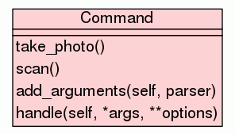

Trees
Indices
Help
IBRI
Package search
::
Package management
::
Package commands
::
Module launch
:: Class Command
[
hide private
]
Class Command
source code

Instance Methods
[
hide private
]
add_arguments
(
self
,
parser
)
source code
handle
(
self
,
*args
,
**options
)
source code
Static Methods
[
hide private
]
take_photo
()
source code
scan
()
source code
Trees
Indices
Help
IBRI
Generated by Epydoc 3.0.1 on Wed Aug 17 17:01:27 2016
http://epydoc.sourceforge.net